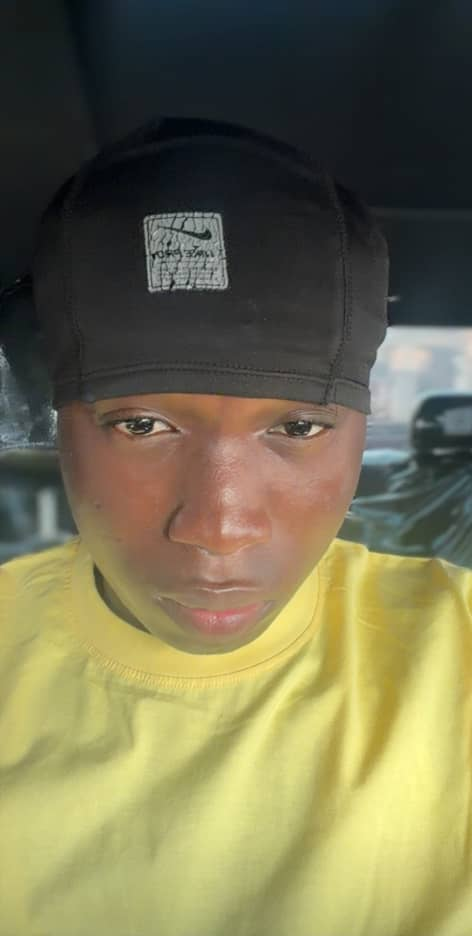

Cybersecurity Enthusiast
I am a cybersecurity enthusiast passionate about protecting systems, exploring vulnerabilities, and learning new tech innovations. I aim to help people and organizations stay secure in the digital world.
I also enjoy problem-solving, analyzing digital systems, and continuously improving my knowledge in cybersecurity and related technologies.
My ultimate goal is to build innovative security solutions that have a meaningful impact.